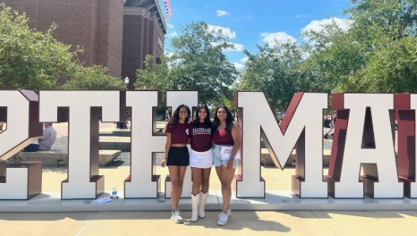

I am a current computer science and business student at Texas A&M.
Surprisingly, I spent most of my high school years as a dedicated future pre-med student. However, during my final year of high school, my perspective shifted when I joined a First Robotic Challenge team, leading me to choose a path in computer science.
Since joining A&M, I've explored the versatile field of computer science through interdisciplinary research in computer science, materials science, and aerospace; a software engineering internship with a large audio company; and a PM role focused on designing a University bus application.
This page was written using HTML and CSS, featuring a hidden second css styling, that you can uncover through inspect element.
To do this right click on the page, select inspect, ensure that you are in the elements tab. Now click the arrow next to head in order to open that section and view the css style. Change href="darkPink.css" to href="lightPurple.css" to view that page in a lavender styling!
- My favorite books: The Awakening, Kindred, A canticle for Leibowitz, The Bluest Eye, The Glass Castle
- My favorite memoirs: This Bridge Called My Back, Waveform: Twenty-First-Century Essays by Women
- My favorite poems: Autumn Sonnets, Facts about the Moon, What I didn't know Before, How to triumph like a Girl
- My favorite short stories: The Veldt, The Nine Billion Names of God, Girl Hood: On (not) Finding Yourself In Books, No Name Woman
- My favorite plays: Lady’s Not For Burning, Life of Galileo, Arcadia, Pygmalion
- My favorite artists: Tate Mcrae, James Arthur, Weston Estate, Sid Sriram, Anirudh Ravichander
- I absolutely love pretty sunsets (especially when the sky is pink).
- My favorite smell is grass on a rainy day.
- My biggest pet peeve is people walking slow.
- I'm an Aggie :))
